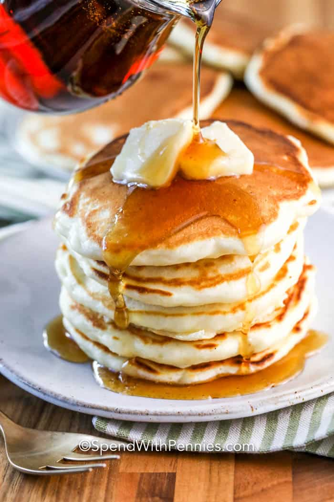

Pancakes

My favorite recipe for fluffy pancakes. I make them every Sunday for my family and friends.
Feel free to add in extras most people love chocolate chips or blueberries, but I have gotten
good milage out of adding hazelnuts or slices of banana.
I also regularly make these as gluten free so that my wife can enjoy them with the kids.
I substitute Gluten free flour 1 for 1 with the normal flour. You may need to alter the amount of milk
your add or your batter will be to runny and you will get something more akin to crepes.
Ingredients
- Dry Ingredients
- 2 Cups Flour
- 1 Tbsp Sugar
- 1 Tsp Salt
- 1 Tsp Baking Powder
- 1/2 Tsp Baking Soda
- Wet Ingredients
- 1 1/2 Cups Milk
- 1 Cup Sour Cream
- 4 Tbsp Melted Butter
- 2 Eggs, Seperated
Steps
- Add all dry ingredients and whisk to combine
- Add all wet ingredients except egg whites and whisk to combine. Try not to over whisk
as this will create gluten and make for a tougher pancake.
- Beat egg whites until they form medium peaks. Add a little sugar and beat until hard peaks form.
- Add the meringue you just made and whisk into batter.
- Cook on medium to medium-low heat. Keep griddle dry or very lightly greased to achieve uniform golden
brown tops.